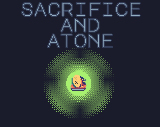
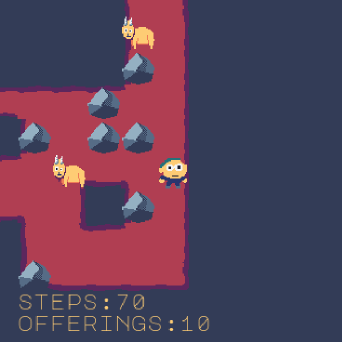

Sacrifice and Atone
Updated


if playing on browser, do yourself a favor and click the fullscreen button
'sacrifice and atone' is an entry for 2024 winter game jam. the theme is 'your life is currency'
use arrow keys to move around.
'x' key to activate crosses and to perform sacrifices
'z' key to atone for your mistakes (rewind)
Holding keys will cause them to repeat (helpful for rewinding)
sourcecode: https://github.com/michaeljosephpurdy/2024-winter-game-jam
| Status | Released |
|---|---|
| Platforms | HTML5, Windows, macOS, Linux |
| Author | mikepurdy |
| Genre | Puzzle |
| Made with | LÖVE, Aseprite |
| Tags | LÖVE, Sokoban |
| Average session | A few minutes |
| Inputs | Keyboard |
| Content | No generative AI was used |